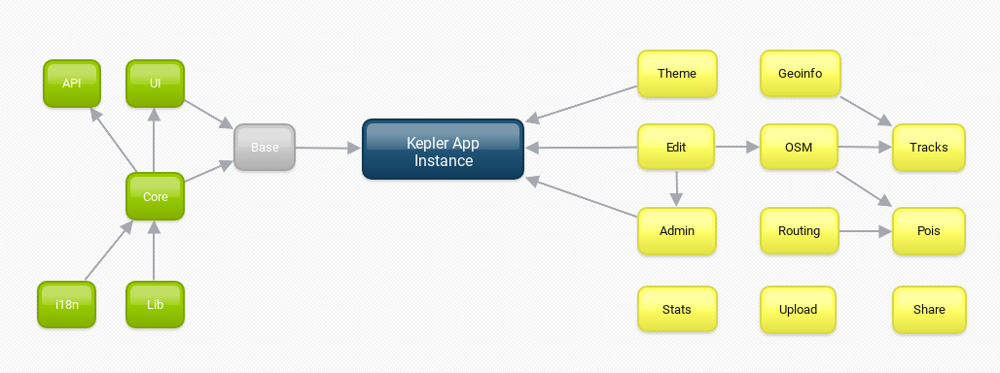

Architecture
Kepler uses a package-based architecture, meaning that the entirety of its codebase resides in /packages path, then each complex module or a group of modules in Kepler are organized in Meteor packages which can be added or removed at runtime.
Every directory here is a Meteor package(contains a package.js file) some of these Meteor packages are also a Kepler plugin(if it contains a plugin.js file)
In addition to this standard design adopted by many large-scale Meteor applications KeplerJs implements a plugins mechanism that allows you to split different pluggable features into different packages, this option facilitates the work of developers that will be able to connect their services or include their customizations without editing the main source code.
Base packages
These packages are mandatory for a basic presentation of data platform:
- keplerjs:lib includes 3rd party libraries and external meteor packages
- keplerjs:i18n contains all languages for base packages
- keplerjs:core implement the base business logic
- keplerjs:core-ui define the base User Interface structure
All this set of base packages can be included in a single hit by installing the meta-package keplerjs:base, probably your starting case study will need only this package. In addition, these plugin packages show content with a better look and allow the data entry by users:
- keplerjs:theme include custom CSS styles icons and images
- keplerjs:edit plugin to edit/remove places’s data
- keplerjs:admin plugin to administer the platform’s data/users
In the following diagram the arrows represent the dependencies, the green blocks are the base packages, and the plugin packages are yellow:

Plugins packages
The Kepler plugins packages provide useful pluggable features for your Kepler application. A plugin package only need to make your own package depend on keplerjs:core or others plugins if needed, it is simply a standard Meteor package that contains a file plugin.js that defines the UI structure, custom settings and others configurations for the Kepler environment. The dependencies between plugins are defined in the classic package.js file, as is the case for Meteor packages.